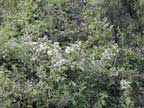
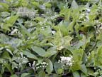
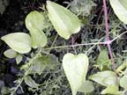
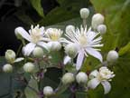
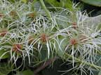
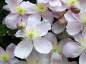
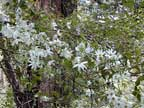

Old man's beard
Clematis vitalba
Other names
traveller's joy
Description
Deciduous climber with woody stems. Branches have twisted petioles which cling to other plants or objects. Leaves are opposite, pinnate, bright glassy green and oval, about 10cm long with about 5 ovate stalked segments. Flowers are small and white with distinctive feathery fruits and fragrant. The flowers are in loose panicles at the ends of axillary or terminal branches.
Similar plants
There are several native species, of which Cl. paniculata is common in the bush. It has showy white flowers in spring and shiny evergreen leaves. Cl. montana is common in gardens. Both are probably toxic but stock are unlikely to come across them.
Distribution
Very common noxious weed, growing over hedges and trees in wasteland and roadsides.
Toxin
Contains the toxin protoanemonin, an irritant yellow, poisonous volatile oil. When the plant is crushed, protoanemonin is released from its precursor ranunculin. It is only present in the fresh plant. Causes acute irritation, erythema and inflammation of the mucous membranes, gastrointestinal mucosa and skin.
Species affected
Principally cattle. They rarely eat the plant because of its acrid taste and irritant effect on the mouth.
Clinical signs acute
Disinclination to stand, progressing to recumbency and in one case death, within 24 hours of onset of symptoms. Conjunctivitis, ulcerated muzzle, dyspnoea, abdominal pain and loss of muscle tone.
Clinical signs chronic
Post mortem signs
Enteritis, pulmonary oedema and generalised congestion. Patches of inflammation on the rumen wall.
Diagnosis
Evidence of clematis in the rumen contents, intense gastro enteritis and lack of other causes.
Differential diagnosis
Poisoning with other plants of the ranunculus family including buttercup and delphinium species. Other causes of gastritis, rumenitis and respiratory distress.
Treatment
Treat internally and topically with dilute potassium permangenate to protect mucosal surfaces. Activated charcoal for decontamination. Give symptomatic treatment.
Prognosis
Good.
Prevention
References
Conner H.E. The Poisonous Plants In New Zealand. 1992. GP Publications Ltd, Wellington
Cooper M R, Johnson A W. Poisonous Plants and Fungi in Britan: Animals and Human Poisoning. Her Majesty’s Stationary Office. London. 1998
Parton K, Bruere A.N. and Chambers J.P. Veterinary Clinical Toxicology, 2nd ed. 2001. Veterinary Continuing Education Publication No. 208
|  plant |
 |
|
|  |
 |
|
|  |
||
|  |
 |
|